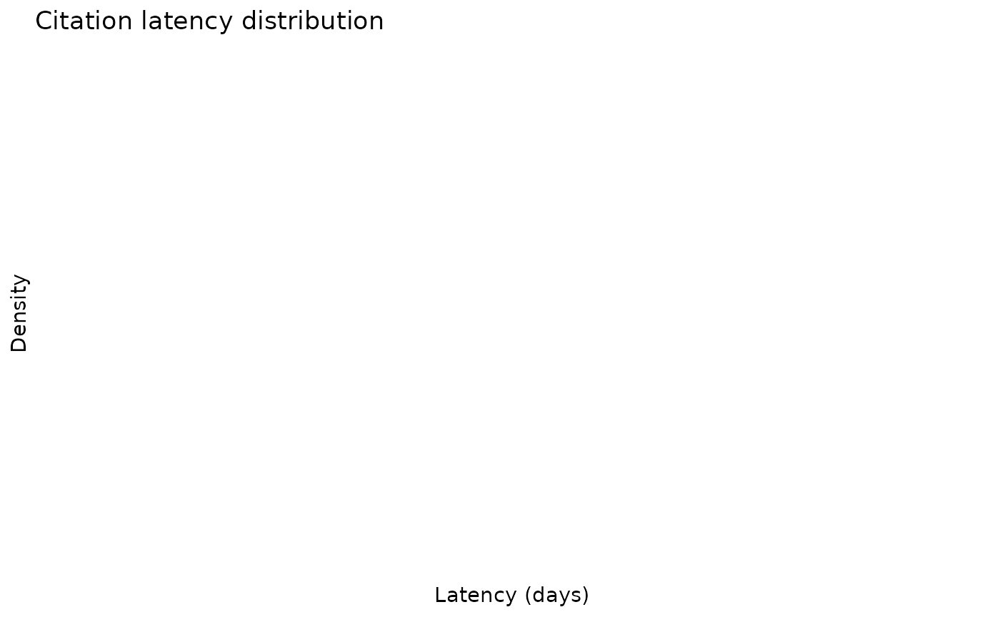
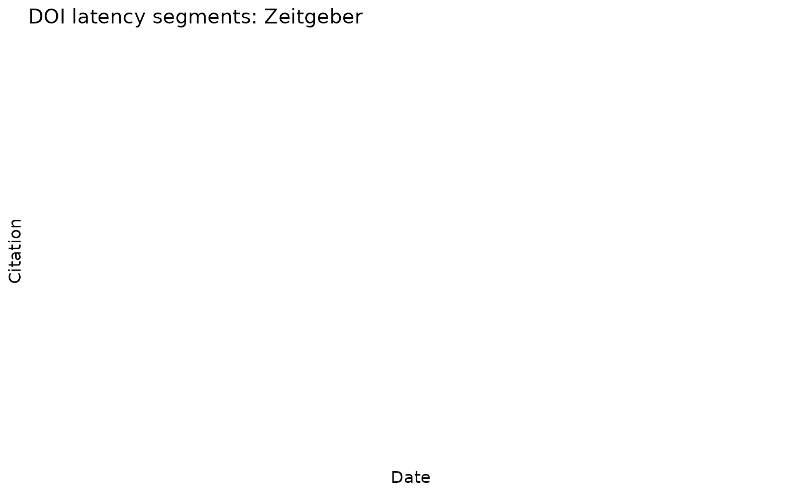
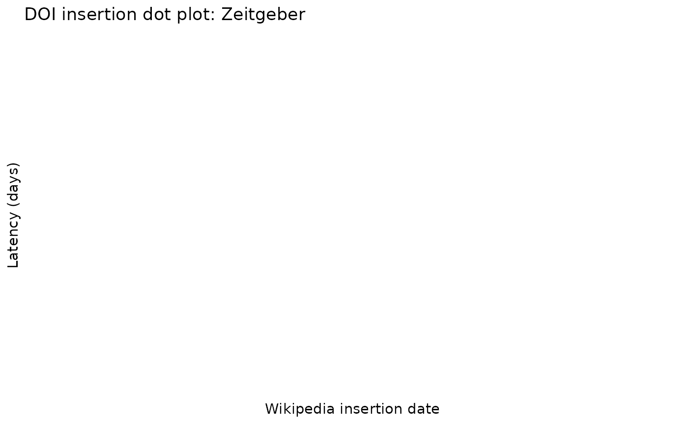
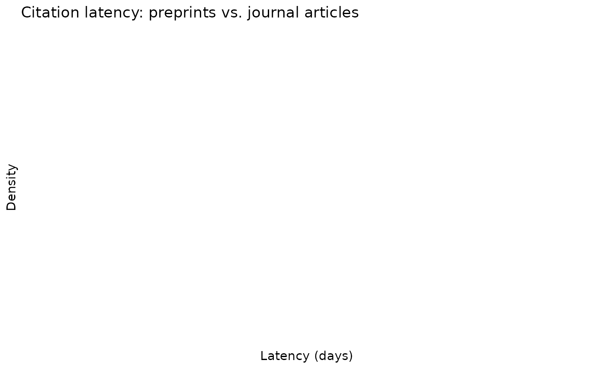

Multi-Article Analysis and Interactive Networks
Source:vignettes/multi-article-networks.Rmd
multi-article-networks.RmdOverview
wikilite includes a suite of interactive visualisations for comparing multiple Wikipedia articles simultaneously. This vignette covers:
- Building article lists from category pages
- The interactive Gantt-style timeline
- Three network visualisations (co-citation, publication, wikilink)
- Citation latency analysis across articles
All network functions require visNetwork
(install.packages("visNetwork")).
1. Build an article list
You can supply article titles directly or derive them from a Wikipedia category.
library(wikilite)
# Option A — explicit titles
articles <- c(
"Zeitgeber",
"Circadian rhythm",
"Sleep deprivation",
"Advanced sleep phase disorder",
"Non-24-hour sleep-wake disorder"
)
# Option B — browse a category
sleep_articles <- get_pagename_in_cat("Circadian rhythm")
head(sleep_articles)
#> [1] "Chronodisruption" "Circadian rhythm"
#> [3] "N-Acetylserotonin" "Actigraphy"
#> [5] "Actogram" "Aralkylamine N-acetyltransferase"
# Option C — explore subcategories first
subcats <- get_subcat_table("Chronobiology")
head(subcats)
#> pageid ns title type timestamp
#> 1 48471439 14 Category:Chronobiologists subcat 2025-06-17T05:49:30Z
#> 2 37000069 14 Category:Circadian rhythm subcat 2025-06-17T02:11:48Z
#> 3 19522768 14 Category:Homeostasis subcat 2025-06-16T20:16:34Z
#> parent_cat
#> 1 Category:Chronobiology
#> 2 Category:Chronobiology
#> 3 Category:Chronobiology
# Then pull articles from a chosen subcategory
sub_articles <- get_pagename_in_cat("Sleep disorders")2. Interactive Gantt timeline
plot_interactive_timeline() shows each article as a
horizontal bar spanning from its creation date to its last edit,
coloured by a chosen metric.
# Default: colour bars by SciScore
plot_interactive_timeline(articles)
# Colour by current article size instead
plot_interactive_timeline(articles, color_by = "size")
# No colouring — uniform colour for clean presentation
plot_interactive_timeline(articles, color_by = "none")
# Restrict to a historical snapshot
plot_interactive_timeline(articles, date_an = "2021-01-01T00:00:00Z")
# French Wikipedia
plot_interactive_timeline(
c("COVID-19", "Syndrome respiratoire aigu sévère"),
lang = "fr"
)Hovering over a bar shows the article name, creation date, last-edit date, first editor, and SciScore. Clicking a dot opens the article on Wikipedia.
3. Co-citation network
Articles sharing at least min_shared_dois DOIs are
connected by an edge. Node size scales with the number of shared
citations; thicker edges indicate more overlap.
# Articles sharing ≥ 1 DOI (default)
plot_article_cocitation_network(articles)
# Require ≥ 3 shared DOIs for an edge (cleaner graph)
plot_article_cocitation_network(articles, min_shared_dois = 3)The network is interactive: drag nodes, zoom, and click any node to open the Wikipedia article in a new tab.
4. Publication bipartite network
A bipartite (two-mode) network where article nodes (blue boxes) connect to DOI nodes (orange dots). Node size indicates how many articles cite each DOI, making highly shared papers immediately visible.
# Show papers cited by ≥ 2 articles (default)
plot_article_publication_network(articles)
# Show up to 80 top DOIs, require at least 3 citing articles
tryCatch(
plot_article_publication_network(
articles,
top_n_dois = 80L,
min_wiki_count = 3L
),
error = function(e) message("Note: ", conditionMessage(e))
)
# Enrich paper nodes with EuropePMC metadata (title, journal, year)
plot_article_publication_network(articles, annotate = TRUE)DOI nodes link directly to doi.org when clicked.
5. Wikilink network
Shows how articles in your set link to each other.
Directed edges point from the linking article to the linked article. By
default, only links between articles in your list are shown
(only_internal = TRUE).
# Only links between articles in the list
plot_article_wikilink_network(articles)
# Also include outgoing links to other Wikipedia articles
plot_article_wikilink_network(articles,
only_internal = FALSE,
top_n_links = 60L)6. Citation latency analysis
How long after a paper is published does it take to appear in
Wikipedia? Use compute_citation_latency() together with
EuropePMC annotation.
# Fetch most recent revisions
recent <- get_category_articles_most_recent(articles)
# Extract DOIs
doi_df <- get_regex_citations_in_wiki_table(recent, pkg.env$doi_regexp)
# Annotate with EuropePMC publication dates
epmc_df <- annotate_doi_list_europmc(unique(doi_df$citation_fetched))
# Compute latency (days from publication → Wikipedia insertion)
latency <- compute_citation_latency(doi_df, epmc_df)
# Overall latency distribution
plot_latency_distribution(latency)
# Stratified: preprints vs. journal articles (includes KS-test p-value)
plot_latency_distribution(latency, stratify_by = "is_preprint")
# Segment plot: each DOI's gap as a horizontal line
get_segment_history_doi_plot(latency, "Zeitgeber")
# Scatter: insertion date vs. latency
get_dotplot_history(latency, "Zeitgeber")
Key columns in the latency data frame:
| Column | Description |
|---|---|
citation_fetched |
DOI |
firstPublicationDate |
EuropePMC publication date |
latency_days |
Days from publication to Wikipedia insertion |
is_preprint |
TRUE for bioRxiv/medRxiv DOIs
(10.1101/…) |
7. Batch workflow example
The following code replicates a typical research workflow: browse a category, download recent revisions, extract citations, annotate, and visualise.
library(wikilite)
# 1. Browse the category tree
subcats <- get_subcat_table("Chronobiology")
# 2. Choose a category and list its articles
articles <- get_pagename_in_cat("Circadian rhythm")
# 3. Visualise the timeline
plot_interactive_timeline(articles, color_by = "sciscore")
# 4. Explore citation sharing
plot_article_cocitation_network(articles, min_shared_dois = 2)
plot_article_publication_network(articles, annotate = TRUE)
# 5. Latency analysis
recent <- get_category_articles_most_recent(articles)
doi_df <- get_regex_citations_in_wiki_table(recent, pkg.env$doi_regexp)
epmc_df <- annotate_doi_list_europmc(unique(doi_df$citation_fetched))
latency <- compute_citation_latency(doi_df, epmc_df)
plot_latency_distribution(latency, stratify_by = "is_preprint")
# 6. Export
openxlsx::write.xlsx(latency, "circadian_latency.xlsx")
export_doi_to_bib(unique(doi_df$citation_fetched), "circadian_refs.bib")
#> | | | 0%
#> | | | 1%
#> | |= | 1%
#> | |= | 2%
#> | |== | 2%
#> | |== | 3%
#> | |== | 4%
#> | |=== | 4%
#> | |=== | 5%
#> | |==== | 5%
#> | |==== | 6%
#> | |===== | 6%
#> | |===== | 7%
#> | |===== | 8%
#> | |====== | 8%
#> | |====== | 9%
#> | |======= | 9%
#> | |======= | 10%
#> | |======= | 11%
#> | |======== | 11%
#> | |======== | 12%
#> | |========= | 12%
#> | |========= | 13%
#> | |========= | 14%
#> | |========== | 14%
#> | |========== | 15%
#> | |=========== | 15%
#> | |=========== | 16%
#> | |============ | 16%
#> | |============ | 17%
#> | |============ | 18%
#> | |============= | 18%
#> | |============= | 19%
#> | |============== | 19%
#> | |============== | 20%
#> | |============== | 21%
#> | |=============== | 21%
#> | |=============== | 22%
#> | |================ | 22%
#> | |================ | 23%
#> | |================ | 24%
#> | |================= | 24%
#> | |================= | 25%
#> | |================== | 25%
#> | |================== | 26%
#> | |=================== | 26%
#> | |=================== | 27%
#> | |=================== | 28%
#> | |==================== | 28%
#> | |==================== | 29%
#> | |===================== | 29%
#> | |===================== | 30%
#> | |===================== | 31%
#> | |====================== | 31%
#> | |====================== | 32%
#> | |======================= | 32%
#> | |======================= | 33%
#> | |======================= | 34%
#> | |======================== | 34%
#> | |======================== | 35%
#> | |========================= | 35%
#> | |========================= | 36%
#> | |========================== | 36%
#> | |========================== | 37%
#> | |========================== | 38%
#> | |=========================== | 38%
#> | |=========================== | 39%
#> | |============================ | 39%
#> | |============================ | 40%
#> | |============================ | 41%
#> | |============================= | 41%
#> | |============================= | 42%
#> | |============================== | 42%
#> | |============================== | 43%
#> | |============================== | 44%
#> | |=============================== | 44%
#> | |=============================== | 45%
#> | |================================ | 45%
#> | |================================ | 46%
#> | |================================= | 46%
#> | |================================= | 47%
#> | |================================= | 48%
#> | |================================== | 48%
#> | |================================== | 49%
#> | |=================================== | 49%
#> | |=================================== | 50%
#> | |=================================== | 51%
#> | |==================================== | 51%
#> | |==================================== | 52%
#> | |===================================== | 52%
#> | |===================================== | 53%
#> | |===================================== | 54%
#> | |====================================== | 54%
#> | |====================================== | 55%
#> | |======================================= | 55%
#> | |======================================= | 56%
#> | |======================================== | 56%
#> | |======================================== | 57%
#> | |======================================== | 58%
#> | |========================================= | 58%
#> | |========================================= | 59%
#> | |========================================== | 59%
#> | |========================================== | 60%
#> | |========================================== | 61%
#> | |=========================================== | 61%
#> | |=========================================== | 62%
#> | |============================================ | 62%
#> | |============================================ | 63%
#> | |============================================ | 64%
#> | |============================================= | 64%
#> | |============================================= | 65%
#> | |============================================== | 65%
#> | |============================================== | 66%
#> | |=============================================== | 66%
#> | |=============================================== | 67%
#> | |=============================================== | 68%
#> | |================================================ | 68%
#> | |================================================ | 69%
#> | |================================================= | 69%
#> | |================================================= | 70%
#> | |================================================= | 71%
#> | |================================================== | 71%
#> | |================================================== | 72%
#> | |=================================================== | 72%
#> | |=================================================== | 73%
#> | |=================================================== | 74%
#> | |==================================================== | 74%
#> | |==================================================== | 75%
#> | |===================================================== | 75%
#> | |===================================================== | 76%
#> | |====================================================== | 76%
#> | |====================================================== | 77%
#> | |====================================================== | 78%
#> | |======================================================= | 78%
#> | |======================================================= | 79%
#> | |======================================================== | 79%
#> | |======================================================== | 80%
#> | |======================================================== | 81%
#> | |========================================================= | 81%
#> | |========================================================= | 82%
#> | |========================================================== | 82%
#> | |========================================================== | 83%
#> | |========================================================== | 84%
#> | |=========================================================== | 84%
#> | |=========================================================== | 85%
#> | |============================================================ | 85%
#> | |============================================================ | 86%
#> | |============================================================= | 86%
#> | |============================================================= | 87%
#> | |============================================================= | 88%
#> | |============================================================== | 88%
#> | |============================================================== | 89%
#> | |=============================================================== | 89%
#> | |=============================================================== | 90%
#> | |=============================================================== | 91%
#> | |================================================================ | 91%
#> | |================================================================ | 92%
#> | |================================================================= | 92%
#> | |================================================================= | 93%
#> | |================================================================= | 94% | |================================================================== | 94%
#> | |================================================================== | 95%
#> | |=================================================================== | 95%
#> | |=================================================================== | 96%
#> | |==================================================================== | 96%
#> | |==================================================================== | 97%
#> | |==================================================================== | 98%
#> | |===================================================================== | 98%
#> | |===================================================================== | 99%
#> | |======================================================================| 99%
#> | |======================================================================| 100%8. Multilingual analysis
All functions accept a lang parameter for any Wikipedia
language edition.
# Compare sleep-science articles in French Wikipedia
fr_articles <- get_pagename_in_cat("Rythme circadien", lang = "fr")
plot_interactive_timeline(fr_articles, lang = "fr", color_by = "sciscore")
# Co-citation network in German Wikipedia
de_articles <- get_pagename_in_cat("Chronobiologie", lang = "de")
plot_article_cocitation_network(de_articles, lang = "de", min_shared_dois = 2)9. Troubleshooting
| Problem | Solution |
|---|---|
visNetwork not available |
install.packages("visNetwork") |
| “No DOIs found” in network | Lower min_wiki_count or
min_shared_dois
|
| Network is very dense | Increase min_shared_dois or
top_n_dois
|
| Slow for large article sets | Use date_an to restrict to a historical snapshot |
EuropePMC annotation failed |
Check internet access; try again later |